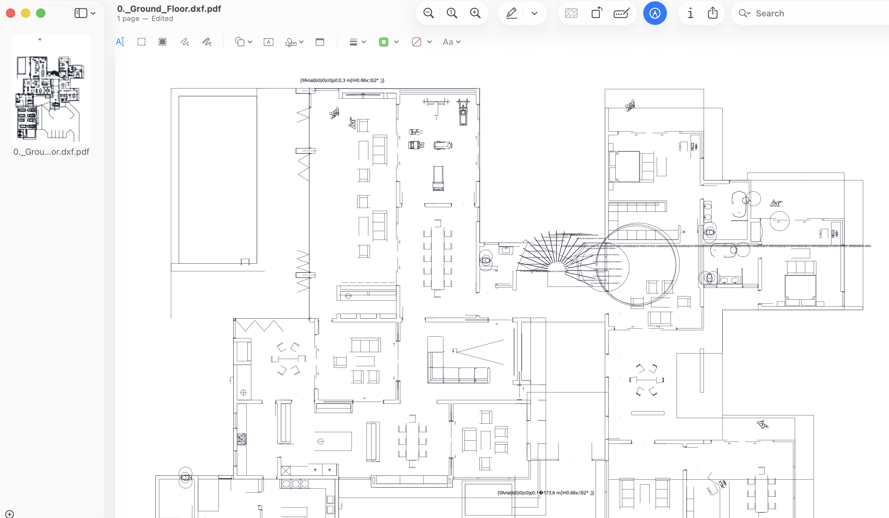

Drawing Distribution
PDF exports are easier to circulate to stakeholders who do not work directly in CAD tools.
DXF to PDF and Measurement Workflows
Convert DXF to PDF in a practical process for construction teams: open the drawing, review clarity, and export to PDF for sharing or takeoff preparation.
Convert DXF drawings into practical PDF files for sharing, review and measurement workflows.
If you searched for convert DXF to PDF, save DXF as PDF, or export DXF drawings, this is the exact DXF to PDF workflow used in Buildprax. It is designed for a lightweight desktop workflow without unnecessary complexity.
Many construction teams prefer PDF copies for review workflows while keeping DXF files as the editable source.

PDF exports are easier to circulate to stakeholders who do not work directly in CAD tools.
Keep a DXF source while using PDF copies for review and downstream quantity workflows.
Move naturally from conversion into measurement workflows where quantities are structured for reporting.
After converting your files, you can measure both formats inside one Buildprax project and carry quantities into Bills of Quantities, estimates, and certificates.